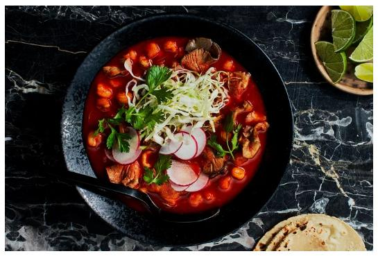

Vegan Pozole

Description
A traditional Mexican dish with a vegan twist
Prep time: 25 minutes
Total Time: 1 hr 20 mins
Servings: 8
Ingredients
- 4 cups water
- 4 California chiles
- 8 Guajillo chiles
- 3 tbsp Avocado oil
- 1 1/2 lbs Lions Mane mushrooms
- 1 medium Yellow Onion
- 3 Dried Bay leaves
- 5 Garlic cloves
- 5 cups Rinsed and Drained Hominy
- 6-8 cups Vegetable Broth
- 8 Radishes
- 4 Limes
- Fresh Cilantro
- Salt and Pepper to taste
Steps
- Cut chiles lengthwise and remove seeds.Transfer chiles to a small saucepan
and add 4 cups of water and bring to a boil unitl soft. About 8 minutes and set aside.
- Heat oil in a seperate pot and add mushrooms, onions, and bay leaves and cook while stirring often
Reduce heat after 5 mintues and stir for 5 more mintes, then remove from heat.
- Drain chiles, reserve 2 cups of liquid. Place chiles reserved liquid abd garlic in
a blender. Secure lid and blens until smooth. Make sure to remove middle lid to allow for steam to escape
- Pour chile mix through a finwe mesh strainer into the mushromm mixture pot. Add Hominy, salt and 6 cups of broth.
Stir, and Bring to a boil over medium high heat then reduce to a medium heat
Cover pot and allow pozole to cook undisturbed for 35 minutes. Season with salt and pepper
- Remove pot from heat let pozole rest for 10 mintues. Discard bay leaves and serve with cabbage,
raddish, limes, and cilantro
Back